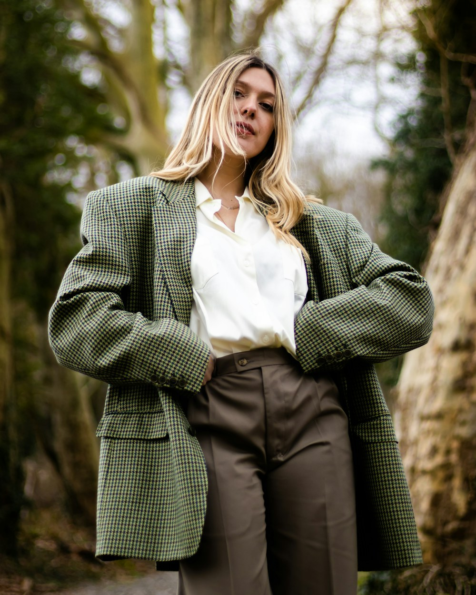

MORE FROM THE EDIT
The details behind each find.

JUNIPER & THREAD
Cream Knit Sweater
$48 · Size M · Excellent condition
A chunky knit sweater in pale cream with a round neck and relaxed sleeves. Fiber content is not listed.
Store details
NORTH LOOP ARCHIVE
Blue Denim Jacket
$84 · Size S · Very good condition
A light-wash denim jacket with a pale contrast collar and front pockets. The sample listing does not specify the collar fabric.
Store details
SECOND STORY VINTAGE
Blue Stripe Shirt
$24 · Size M · Good condition
A blue-and-white striped shirt with a classic collar. The exact fabric is not specified.
Store details
JUNIPER & THREAD
Rust Floral Dress
$56 · Size S · Excellent condition
A long-sleeved dress with an all-over floral print and softly gathered skirt. Fiber content is not listed.
Store details
NORTH LOOP ARCHIVE
Vintage Blue Jeans
$49 · Size M · Good condition
A pair of mid-blue jeans with a straight-looking leg and everyday wash. The exact fit is not specified.
Store details
SECOND STORY VINTAGE
Checked Blazer
$74 · Size L · Very good condition
A softly structured checked blazer styled over a white shirt. Fiber content is not listed.
Store details
NORTH LOOP ARCHIVE
Olive Utility Jacket
$62 · Size L · Good condition
An olive jacket with a button front and patch pockets. The sample listing does not specify fiber content.
Store details